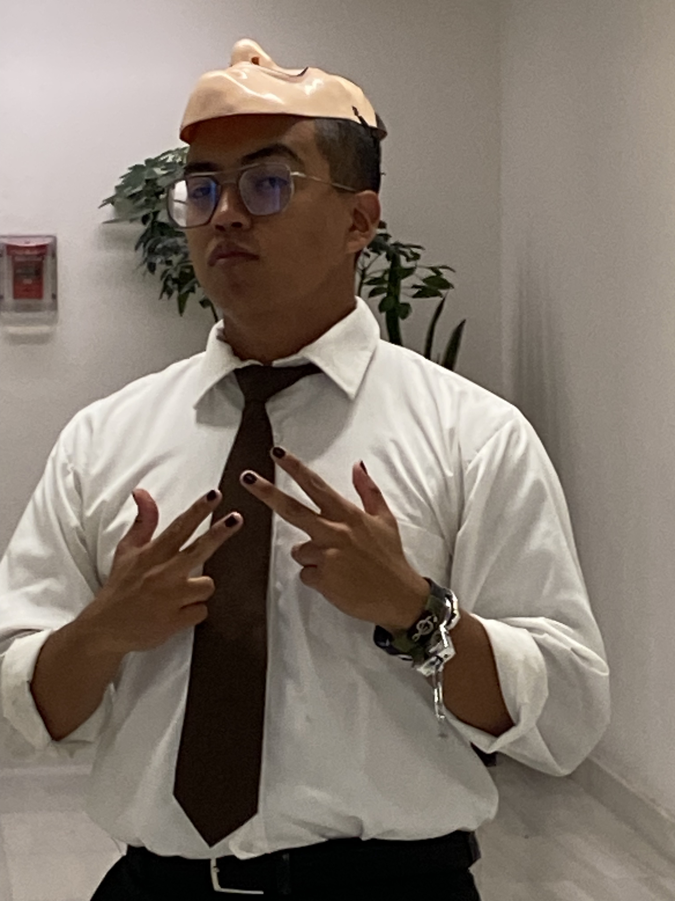
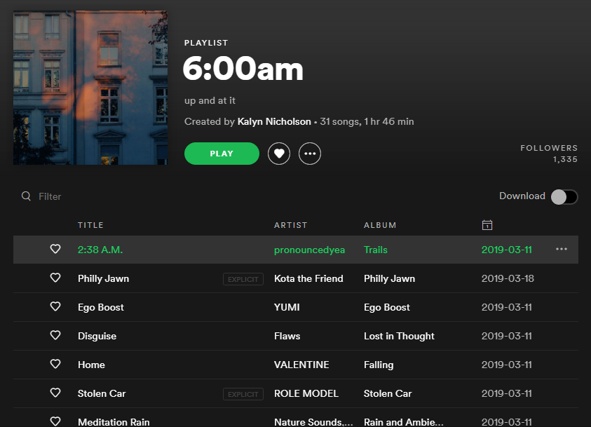
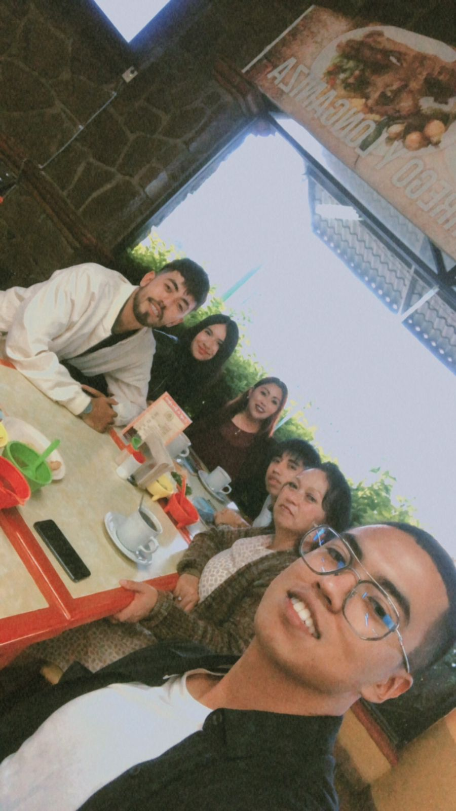
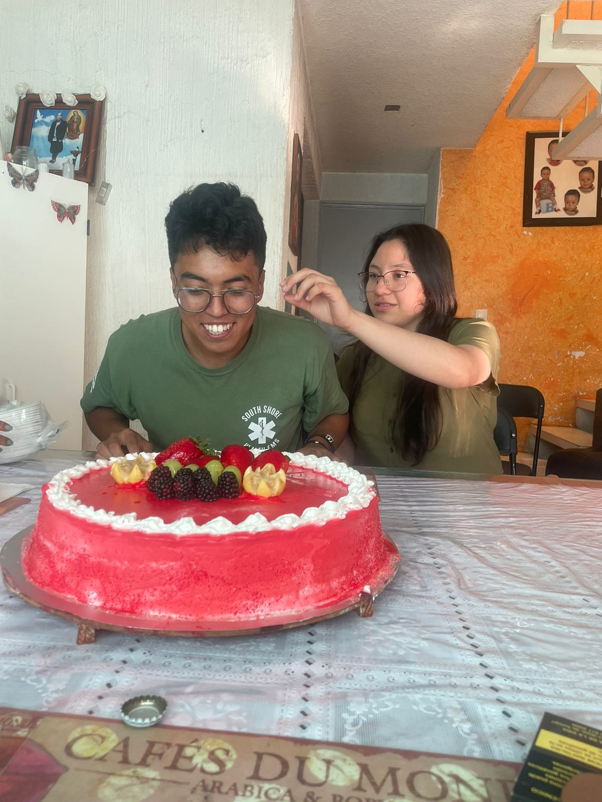

Mi nombre es Alan Ivan, no tengo preferencia por ninguno de los nombres en específico, pero estoy más acostumbrado al nombre Alan. Actualmente me encuentro estudiando en ESCOM y aunque no vengo de una escuela de programación o informática, poco a poco siento que estoy recuperando los años que perdí en la vocacional estudiando algo que no me gustaba.
Me gusta mucho la programación, pero sobre todo me gusta el desarrollo web y aunque mi experiencia se limita a los últimos meses, trabajar con Django y con Node Js ha resultado bastante satisfactorio. Si pudiera describirme con atributos serían:
Me senti atraido por la materia de web por la mención d eun proyecto exigente y hasta ahora me ha gustado el enfoque tan inclusivo para todas las personas en el curso. Me encanta recordar ddesde cero conceptos de etiquetas e inclusive de estilos que puede haya olvidado.
Aprovechando ese último punto, agrego el link a una página que me recomendó ese profesor para aprender sobre tecnologías: Stackshare
Me gusta mucho la música, no tengo un gusto especial por cierto tipo ni suelo seguir a muchos artistas, pero disfruto escuchar recomendaciones, encontrar nuevas canciones en TikTok, Youtube o Instagram. Algunas de las canciones que más escucho actualmente son:
En cuanto a otros gustos, aunque disfruto de muchas cosas, ninguna me apasiona tanto como la sensación de estar aprendiendo algo. He intentado la lectura, los deportes y la comida, pero ninguna sensación se le compara.
Mi familia es pequeña, pero siempre he tenido su apoyo. Aunque no siempre estén de acuerdo con mis decisiones, siempre confían en mi criterio y se han mostrado bastante dispuestos a apoyarme en todo lo que necesito.
Amo el concepto que tienen de lo que son las responsabilidades afectivas con los hijos y aunque en mi etapa de secundaria me alejé y llegué a tener sentimientos complicados, en este momento me siento muy agradecido y feliz con la vida que me tocó vivir y las personas que la acompañan.
Aunque no parecería relevante mencionarla aquí o quizás podría haberla agregado al apartado de familia, desde que la conocí en ESCOM me parece importante mencionarla como parte importante de lo que me define como persona y sobre todo como estudiante de esta escuela porque siempre estoy con ella.
Parte de mi inspiración para hacer cosas que me resultan aburridas o que atentan contra la idea (errónea) de no perder el poco tiempo que tengo en cosas tan fuera de la carrera es ella. Por ella retomé el gusto por dibujar
